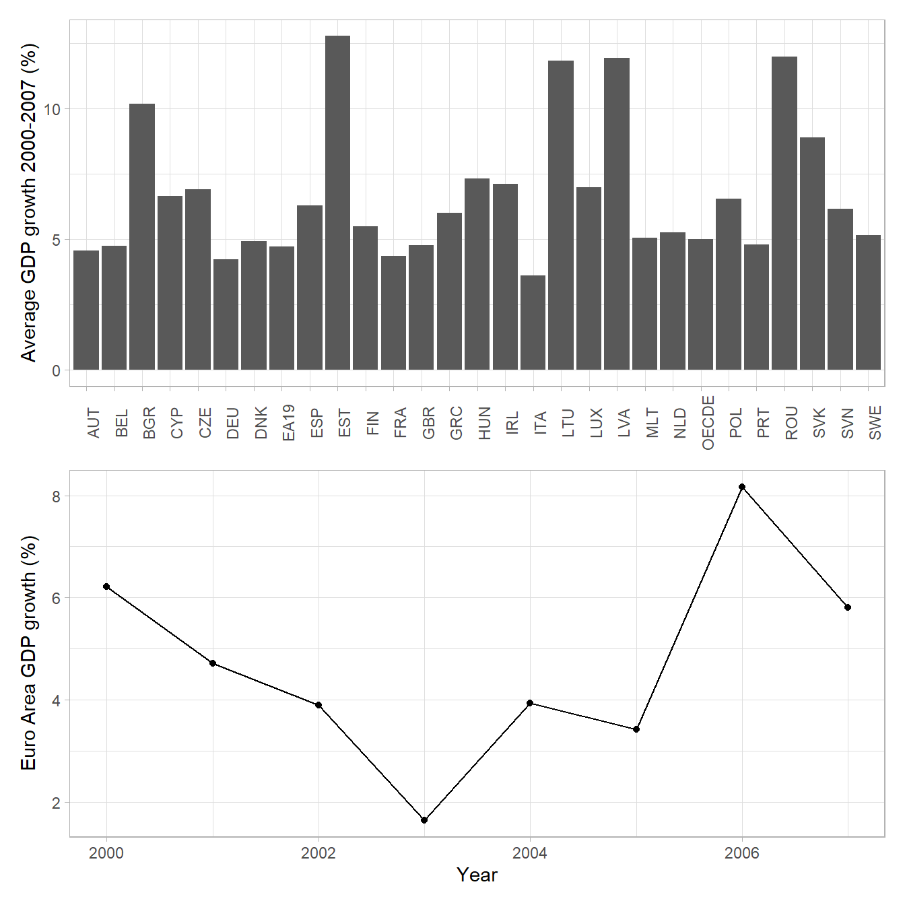
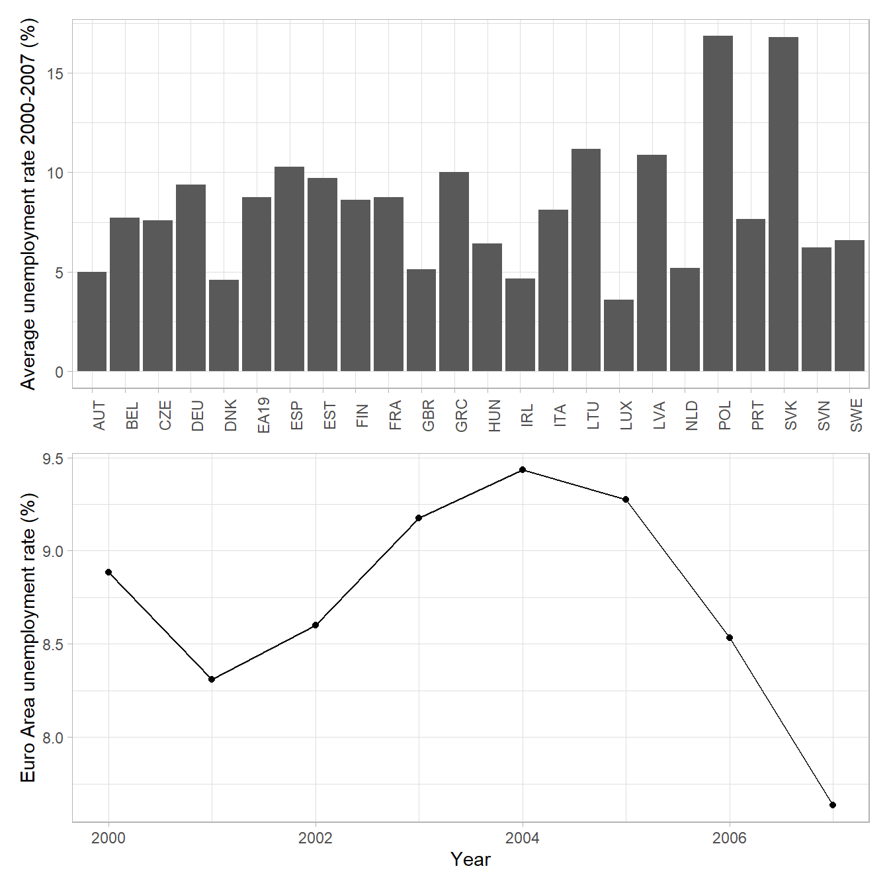
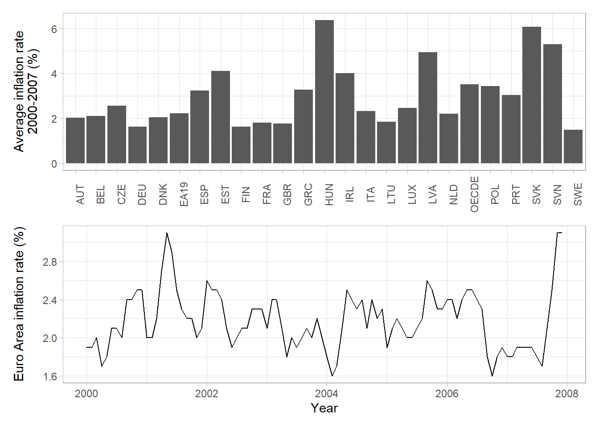
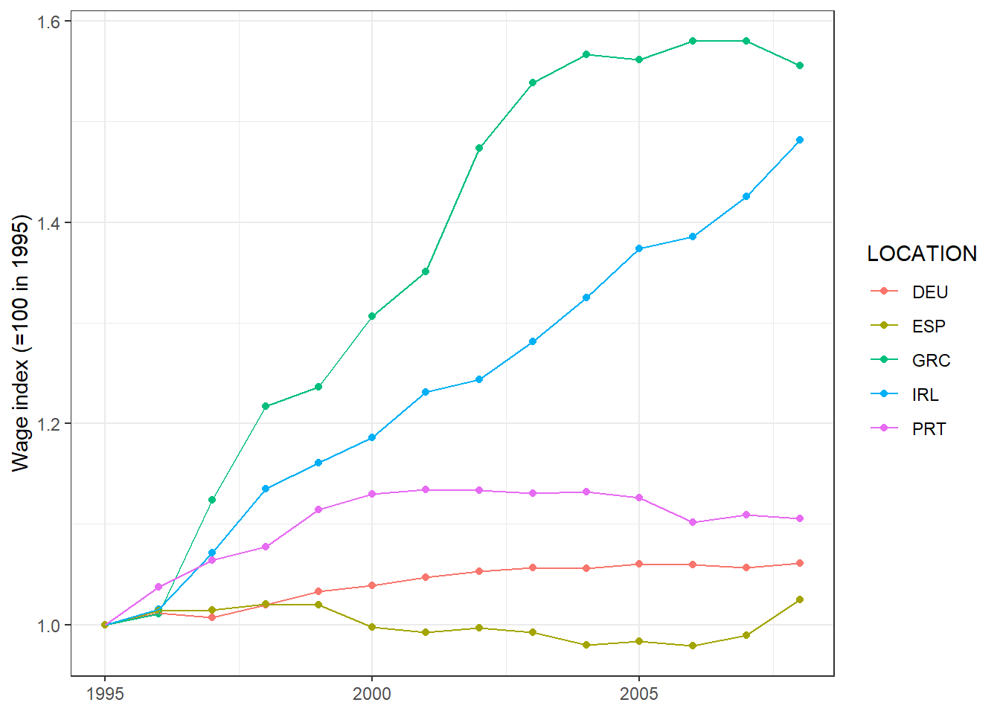
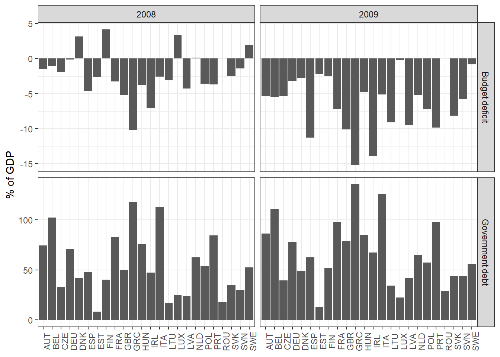
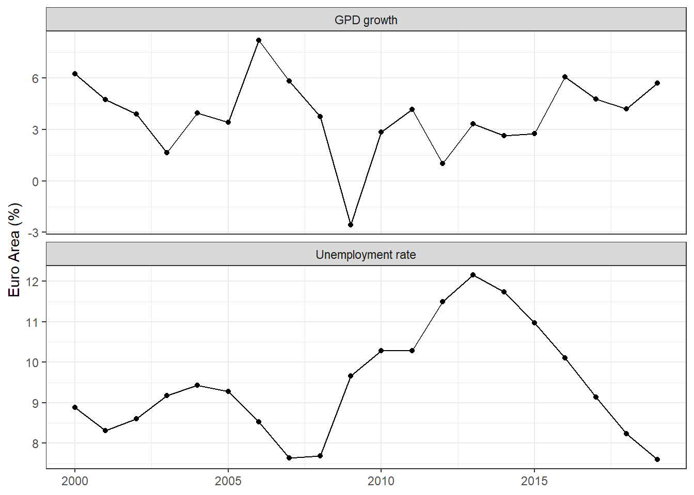
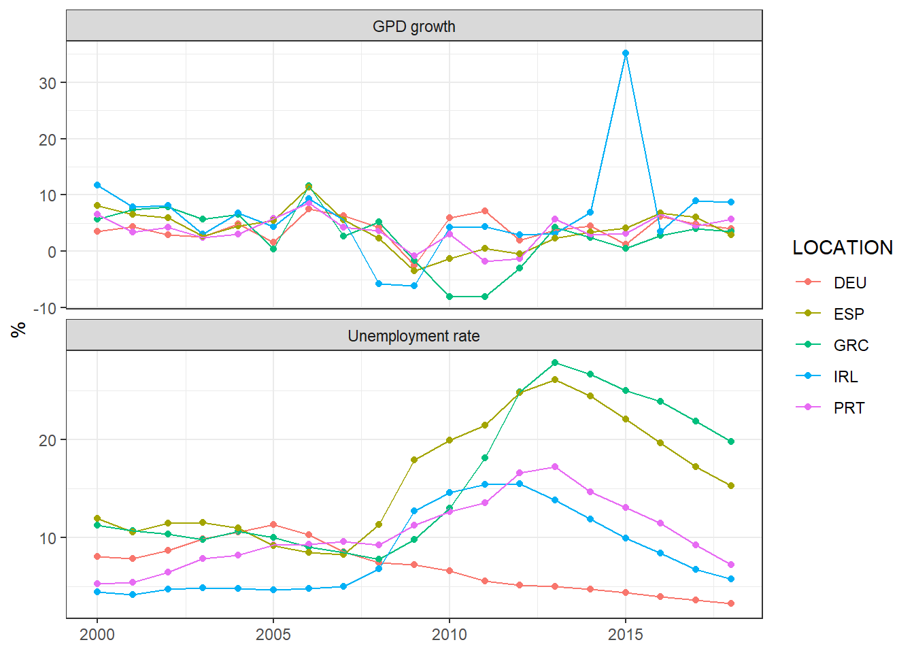
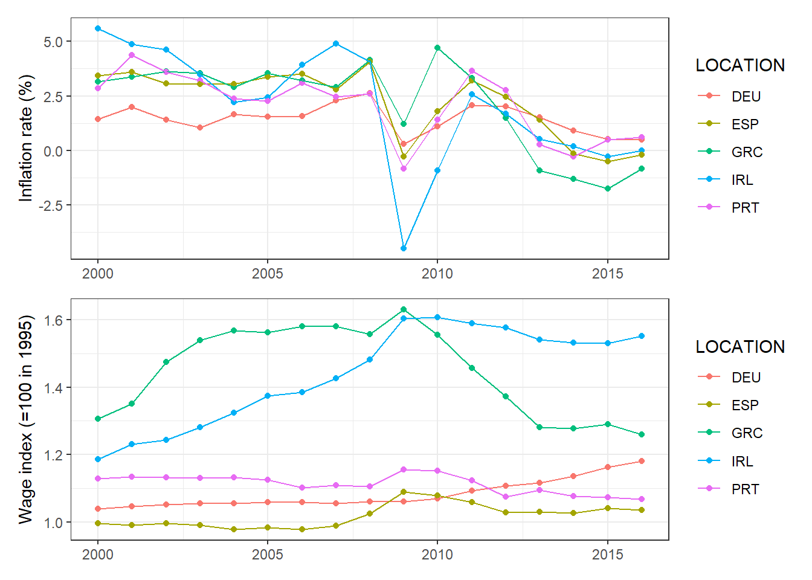
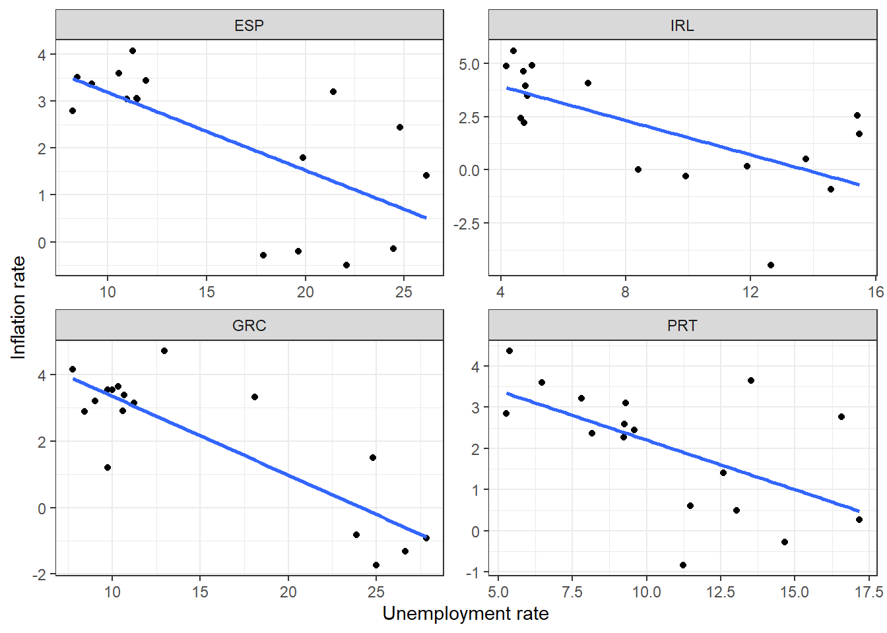

SSCECON207:
The European Debt Crisis
Introduction
This case study looks at the European Debt Crisis between 2009-2012 by combining insights from the IS-LM-PC model with empirical analysis. The Great Recession, which started in the US with the burst of the housing bubble, also had a large impact on all European economies. In addition, the EU faced a unique situation due to its high levels of real and financial integration. Therefore many European countries – Greece being the most well-known – ended up with unmanageable levels of government budget deficit and government debt. Policy interventions helped somewhat, but the EU nevertheless suffered the consequences of the crisis for several years.
In the following we examine why the debt crisis unfolded and the effectiveness of policy interventions by looking at the evolution of macroeconomic indicators. At the end of the case study we estimate the Phillips curve for the Euro Area between 2000-2016 to see how well the theoretical relationship between inflation and unemployment held in the period of the debt crisis.
Note:
The code used to create the figures used in this case study is available on Github.
Background
Macro indicators before the crisis
In the years before the crisis, the economies of the European Union were doing quite well.
As the figure below shows, the average GDP growth between 2000-2007 was above 3% in all EU economies, and some countries (e.g. the Baltics, Southern countries, Ireland) showed particularly strong growth in the period. The time-series plot showing the annual growth of the Euro Area since 2000 also shows strong annual growth rates between 2-8%.
While the European unemployment rate is generally higher than the US unemployment rate, unemployment in the years before the crisis was also not a major issue: it went above 10% only in some of the former Eastern Block countries, as a consequence of their still relatively recent transition. The Euro Area in particular was doing well in terms of reducing unemployment: in the years before the crisis, unemployment was falling slowly but consistently, going below 8% by 2007.

When it comes to inflation, most countries in the Euro Area had average inflation rates around 2%, and inflation in the Euro Area was very stable in the early 2000s. However, there were some countries with high inflation rates, which based on the Phillips curve relationship may suggest that those economies are operating above potential. Next to some of the Eastern European transition economies, Greece, Ireland, Portugal and Spain also have average inflation rates above 3%. Later you will see that these countries were all badly hit by the debt crisis, so it is possible that having output above potential made these countries more vulnerable to shocks. The following sections elaborate on these differences further.

European integration
The Euro Area needs to coordinate economic policy, which means that the European Central Bank (ECB) sets the same interest rate for all Euro Area countries. Therefore, in the case of a crisis – in which different countries may be impacted differently and may require different policy interventions – the available monetary policy tools are limited.
In addition, all EU countries are part of the Stability & Growth Pact (SGP), which limits government deficit to 3% of GDP and public debt to 60% of GDP. While this pact allows for temporary deviations in a crisis, it still places some limits on fiscal policy, especially in the recovery stage after a crisis. Other than the SGP, fiscal policy is largely in the hands of national governments, uncoordinated between EU countries.
These limitations on monetary policy and coordination issues in fiscal policy were not very problematic in the stable economic conditions before the crisis, but you will see that they affected the policy choices during and after the crisis.
Differences between countries
In the figures above you could see that Euro Area countries had different growth and unemployment rates. Recall that faster growing countries would like higher interest rates to keep inflation low, while slower growing countries prefer lower interest rates and expansionary fiscal policy to stimulate growth.
Following the introduction of the euro, high interest rates in the fast-growing, peripheral economies started to fall in order to converge to the lower interest rates in Germany and other central economies. These low interest rates encouraged public and private borrowing in these countries. The resulting lending boom increased output, and put pressure on prices and wages: peripheral economies were operating above the natural level of output, and the consequences of doing so made them more vulnerable to a crisis.
Next to having a single policy rate in the Euro Area, the risk premium in peripheral economies also fell as the common currency eliminated exchange rate risk, and trust in the ECB removed much of the default risk. The falling risk premium shifted the IS curve to the right. Governments, most notably in Greece and Italy, borrowed a lot at these low interest rates, increasing their budget deficits and debt levels.
In countries like the UK, Ireland and Spain the low interest rates primarily affected private borrowing, increasing private consumption and investment, and leading to the emergence of housing bubbles. The theory behind the effect of housing bubbles comes down to a shift in the IS curve: as the value of houses goes up, house owners’ wealth increased, making them want to consume (and invest) more in the present. They financed this additional consumption from borrowing, which they were able to do since the value of their collateral (the houses) went up, so banks were willing to lend them more. To fit this pattern into the IS-LM framework, you can consider the housing bubbles to increase consumer confidence, prompting consumers to consume more, and therefore shifting the IS curve to the right.
These increases in public and private spending contributed to pushing output above potential, therefore increasing inflation rates and wages. This pressure on prices and wages contributed to a loss of competitiveness in these peripheral economies, increasing their vulnerability to shocks.
The competitiveness of an economy determines how well it is able to participate in the global economy: to simplify it, if wages in a country are high, then producing goods in the country is relatively expensive, making it harder to compete in the export market with countries with lower labor costs. This competitiveness level is particularly important for small open economies that rely heavily on export: a decrease in competitiveness may have very large effects on output if exports form a large fraction of output.
The following figure shows that indeed Ireland and Greece both had major increases in labor costs before the crisis compared to e.g. Germany, corresponding to a loss in competitiveness in these countries.

The debt crisis
When the US housing bubble burst, the effects quickly spread over to Europe. The European housing bubbles also burst, and lending became more risky, leading to higher risk premia and therefore more expensive borrowing. These shocks had immediate effects on the peripheral European economies operating above their natural level of output.
The increasing costs of borrowing made the high debt levels of countries like Greece unsustainable. Greece became the most closely associated with the debt crisis: it was the first country to be unable to pay back its debt. In addition, Ireland, Portugal, Italy and Spain were also at risk of defaulting on their debt, thereby risking the financial stability of the entire Euro Area. There was a need for effective policy interventions from the ECB, the EU, and national governments.
Policy responses
Monetary policy
The following figure plots the interest rate set by the ECB in the Euro Area. Before the crisis, it maintained relatively high interest rates to keep inflation low in the strong economies of the Euro Area. Once the crisis hit Europe, interest rates were dropped steeply as part of an expansionary monetary policy (together with multiple bailout packages for the countries most affected by the debt crisis).
In terms of the IS-LM-PC model, the ECB reacted to output falling below potential as a result of the Great Recession, and it shifted the LM curve down to increase output. However, in doing so, the ECB still had to take into account both the different macroeconomic states within the Euro Area and the zero lower bound on interest rates. So monetary policy alone, despite the intensity of the intervention, was not enough for recovery.

Fiscal policy
Before the crisis, coordinating fiscal policy could have alleviated many of the issues the EU faced. Since monetary policy was centralized, so countries could not use the interest rate (LM curve) to bring output to potential, fast-growing countries could have used fiscal contraction, and slow-growing countries fiscal expansion. In theory, doing so would over time bring all outputs to potential, therefore eliminating the discrepancy within the Euro Area. However, as we have seen, many faster-growing countries were actually engaged in fiscal expansion driven by relatively low interest rates.
Once the Great Recession’s effects reached Europe, such policy coordination to converge to the natural level of output was no longer feasible, as all countries needed fiscal expansion to combat the recession. On the other hand, countries receiving bailout packages from the EU or the IMF were forced to adopt austerity measures (i.e. fiscal contraction) to reduce their budget deficits – the exact opposite to what they needed to recover from the recession.
The following figure presents the disparity between EU countries in their government budget deficits and government debts (both as percentage of GDP) in 2008 and 2009. Clearly, both the overall levels of the indicators and the differences between countries only got worse as the Great Recession unfolded, and even the countries with forced austerity measures initially increased their deficits.

Recovery and results
GDP growth and unemployment
If we look at the Euro Area as a whole – as in the figure below – the crisis in terms of output growth does not seem extreme. While output growth was negative in 2009, the Euro Area had stable positive output growth from 2010 onward. The unemployment rate looks worse: it only peaked in 2013 at 12%, before starting to decrease again.

However, looking at the Euro Area as a whole does not show the full picture. Below you can see the same figure of GDP growth and unemployment for some of the countries most affected by the crisis: Greece, Ireland, Spain and Portugal (with Germany added for comparison).

Greece endured three years of negative output growth (close to -10%), while Ireland had two years of negative growth. Both Greece’s and Spain’s unemployment rates peaked above 25%, significantly above the Euro Area average. Meanwhile, the German unemployment rate was completely unaffected by the crisis, and German economic growth already showed a strong recovery in 2010: the crisis clearly produced vastly different macroeconomic effects between countries.
These differences are explained by the policies used in different countries.
Once the crisis hit, Germany benefited from the expansionary monetary policy of the ECB and its national government’s fiscal expansion. The Great Recession caused a leftward shift of the German IS curve, but the swift downward shift of the LM curve via the low interest rate and the rightward shift of the IS curve via fiscal expansion quickly returned output growth to its pre-crisis level. As the unemployment rate takes time to adjust to a recession, a quick recovery can prevent a sustained increase in the unemployment rate.
On the other hand, countries that had to adopt fiscal contraction due to IMF-imposed austerity measures recovered slowly, as they couldn’t shift the IS curve back to the right, and the ECB’s monetary expansion did not push the LM curve down sufficiently: output growth did not return to its pre-crisis level for years. The fall in output also impacted the unemployment rate for several years after the start of the recession: these countries had a long and painful recovery.
Returning to the natural level of output
The initial fall in output – especially in the countries that were hit the hardest – meant that output fell below potential, leading to an immediate fall in inflation rates (often even deflation). This fall in inflation allowed countries to restore some of their competitiveness in global markets as wages and prices fell. It seems like the Phillips curve relationship holds in these peripheral economies: originally having high inflation rates and output above potential, then as the negative shocks hit, both output and inflation rates fell, followed by a (slow) recovery in output and a gradual stabilization in inflation rates.

The Phillips curve in the Euro Area
To provide further evidence on the Phillips curve relationship during the debt crisis, the figure below shows scatterplots of the inflation rate and the unemployment rate between 2000-2016 in the peripheral Euro Area economies. The blue lines are the estimated Phillips curves per country.

While the relationships are not very strong, all countries exhibited a negative relationship between inflation and unemployment: the high unemployment years post-crisis corresponded to almost zero inflation or even deflation, as we already observed in the line plots of the previous section.